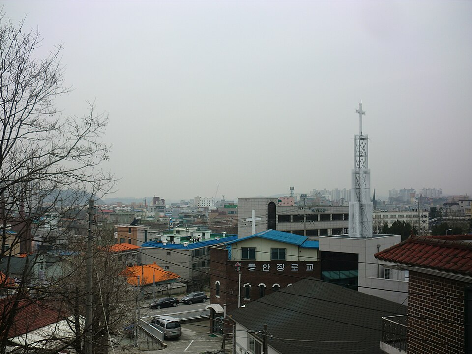

안성 검정고시 — 일하면서 준비할 때 주중·주말 나누는 법

일을 하면서 준비하시는 분들께 가장 많이 듣는 말이 "시간이 없다"입니다. 그런데 이야기를 들어 보면 시간이 아예 없는 경우보다, 있는 시간을 잘못된 과목에 쓰고 있는 경우가 훨씬 많습니다. 안성 검정고시를 직장과 병행해 준비하실 때 주중과 주말을 어떻게 나누면 되는지 정리했습니다.
퇴근 후의 30분과 주말의 3시간은 성격이 다릅니다
퇴근하고 책상에 앉으면 머리가 이미 지쳐 있습니다. 이 시간에 수학 새 단원을 펼치면 진도는 안 나가고 "역시 나는 안 되나 보다"는 생각만 남습니다. 지친 머리로도 되는 공부와 맑은 머리가 필요한 공부를 구분하는 것이 출발점입니다.
퇴근 후에는 영어 단어, 한국사 흐름 정리, 사회·과학 암기처럼 짧게 끊어도 손해가 적은 것을 넣습니다. 10분 하다 끊겨도 다음 날 이어 붙일 수 있습니다. 반대로 수학은 한 번 앉아서 일정 시간 이상 밀어야 이해가 붙기 때문에, 조각 시간에 넣으면 그 시간이 거의 날아갑니다.
주말에는 '이해가 필요한 과목'만 넣습니다
주말에 모든 과목을 한 번씩 보려고 계획표를 꽉 채우시는 분들이 많습니다. 그러면 정작 주말이 아니면 못 하는 공부를 할 시간이 없어집니다. 주말은 수학과 영어 독해처럼 앉아서 밀어야 하는 과목에 먼저 배정하시는 게 맞습니다.
남는 시간에 한 주 동안 외운 것을 확인하는 정도면 충분합니다. 주중에 쌓아 둔 암기가 있으면 주말 확인은 짧게 끝납니다. 이 구조가 돌아가기 시작하면 평일에 공부를 많이 못 한 주에도 진도가 멈추지 않습니다.
하루가 통째로 날아간 날을 처리하는 법
야근이나 집안일로 하루가 비는 일은 반드시 생깁니다. 문제는 그다음입니다. 빠진 분량을 다음 날에 그대로 얹으면 다음 날도 무너지고, 그렇게 사흘이면 계획 전체를 놓습니다.
그래서 처음 계획을 짤 때부터 주에 하루는 비워 두시길 권합니다. 아무 일이 없으면 쉬는 날이고, 일이 생기면 밀린 것을 메우는 날입니다. 그리고 빠진 날의 분량은 전부 따라잡지 않아도 됩니다. 암기한 것은 넘기고, 이해가 필요한 부분만 가져오면 됩니다.
검정고시는 '전 과목 평균'으로 갈립니다
검정고시 합격 기준은 전 과목 평균 60점입니다. 과목마다 100점을 받을 필요가 없다는 뜻이고, 일하는 분들께는 이게 가장 큰 이점입니다. 짧은 시간으로 점수가 빨리 오르는 과목에서 평균을 벌어 두고, 오래 걸리는 과목은 합격선 근처만 지키는 전략이 가능합니다.
또 한 번에 전 과목을 다 붙지 않아도 됩니다. 일정 점수 이상을 받은 과목은 다음 회차에 다시 보지 않아도 되는 제도가 있어서, 회차를 나눠 가는 방법도 선택지가 됩니다. 응시 과목과 면제 기준은 시·도 교육청 공고에 따라 달라질 수 있으니 접수 전에 최신 공고로 확인해 주세요.
안성에서 이렇게 함께합니다
저희는 1:1 맞춤 과외라 수업 시간을 근무 시간에 맞춰 잡습니다. 평일 늦은 저녁이나 주말 오전처럼 가능한 시간대를 먼저 정하고, 그 안에서 무엇을 다룰지 역순으로 설계합니다. 안성시내와 공도읍·죽산면·일죽면·보개면 등 인근 지역은 방문 수업이 가능하고, 퇴근이 늦거나 이동이 부담스러우시면 화상(줌) 수업으로 집에서 그대로 진행합니다.
관련 검색어: 안성검정고시 · 안성검정고시과외 · 안성고졸검정고시 · 안성직장인검정고시 · 경기안성검정고시과외